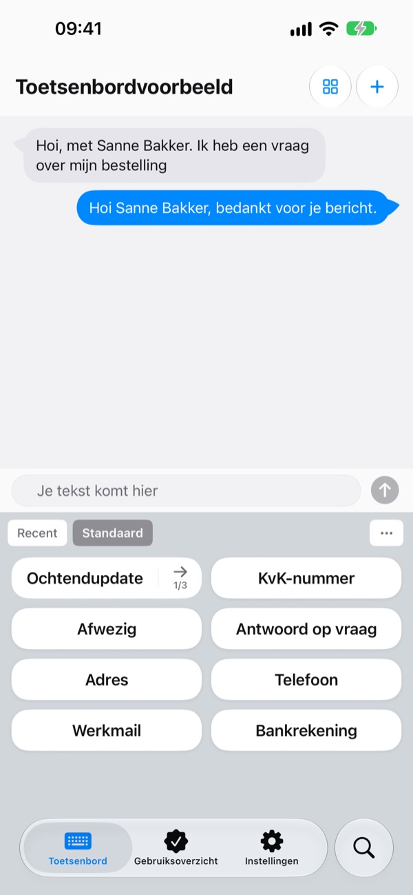
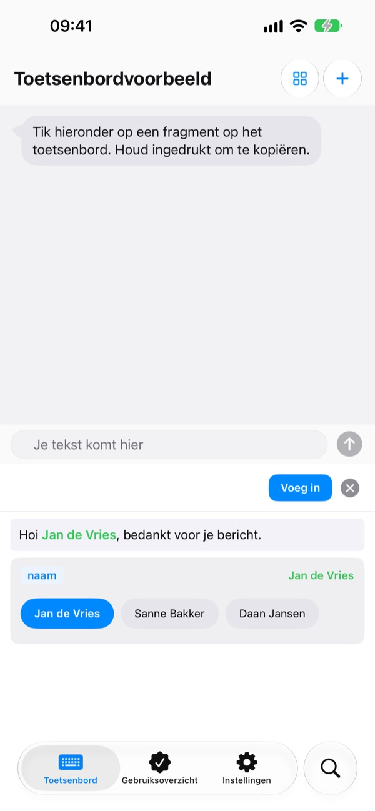
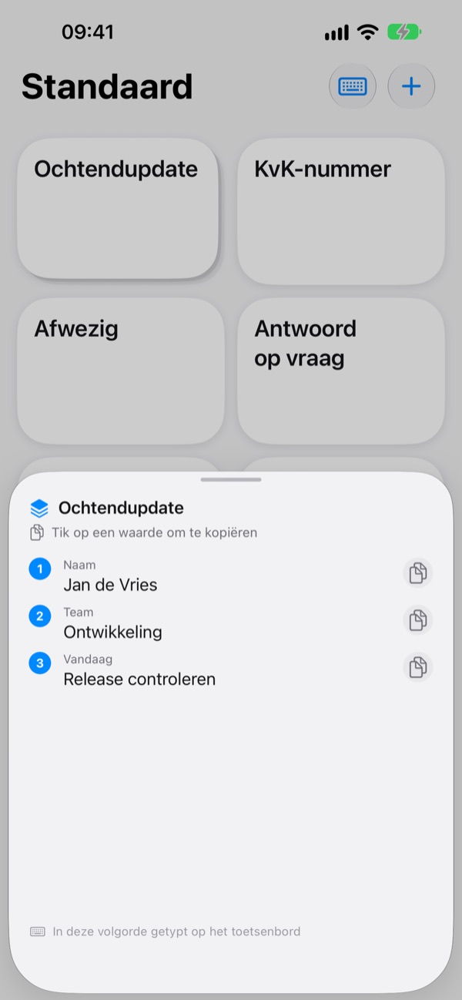
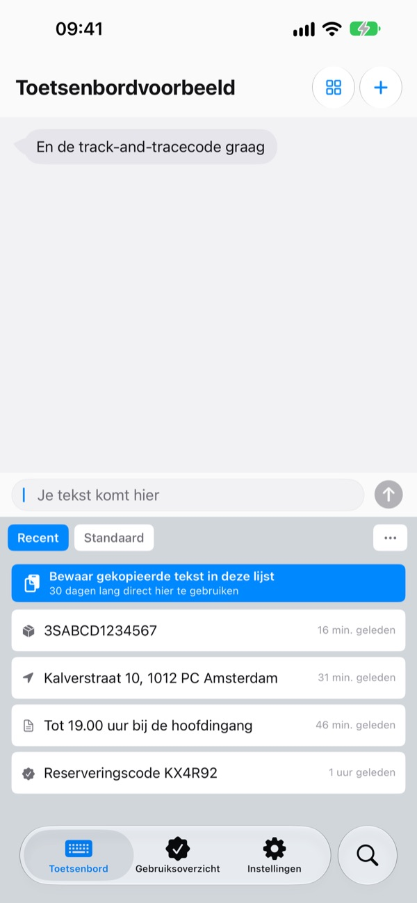
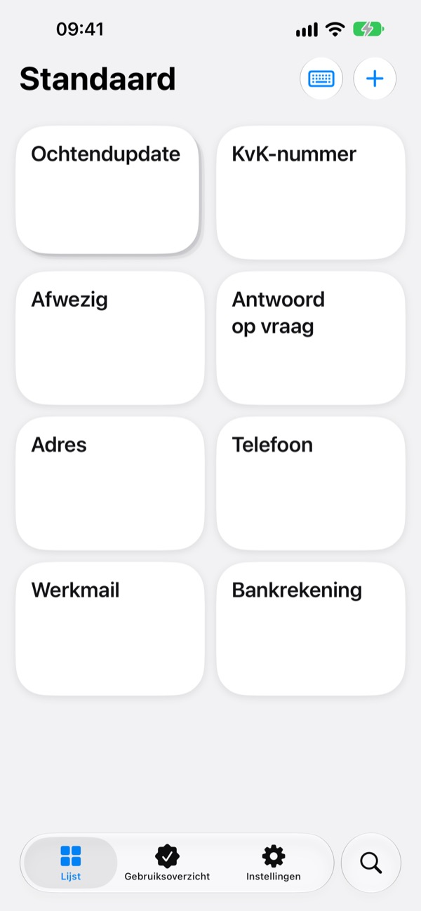

Typ nooit meer
twee keer hetzelfde
Bewaar je rekeningnummer, adres of vaste e-mailopening één keer. In Berichten, Mail, Safari en overal waar je typt, staat het met één tik klaar op het toetsenbord.
De eerste 100 keer invoegen zijn alle functies gratis.

Probeer het hier
Dit is het scherm Voorbeeld toetsenbord uit de app zelf. Op je iPhone verschijnt dit toetsenbord overal waar je kunt typen.
Hoe vaak heb je vandaag je rekeningnummer getypt?
Een vriend vraagt waar hij zijn deel naartoe kan overmaken, dus open je de bankapp en kopieer je het nummer. Daarna tik je je bezorgadres weer letter voor letter in en zet je dezelfde begroeting boven elke klantmail. ClipKeyboard houdt die regels op het toetsenbord, klaar voor één tik.
Vul alleen in wat verandert
Sjablonen laten de delen die veranderen, zoals {naam} of {datum}, open als invulveld.
Bij het invoegen vraagt het sjabloon alleen naar die velden, en je kunt een waarde kiezen die je eerder hebt gebruikt.

Meerdere waarden, op volgorde
Een stapel zet meerdere waarden, zoals naam, team en de taak van vandaag, onder één toets.
Tik om de huidige plek in te voegen en ga met de pijl ernaast naar de volgende.

Wat je kopieert, staat ook op je toetsenbord
Het trackingnummer, adres of telefoonnummer dat je net hebt gekopieerd, komt in het tabblad Recent van het toetsenbord.
E-mailadressen, telefoonnummers, adressen, kaartnummers en IBAN's worden herkend en gesorteerd, zodat je ze binnen een seconde terugvindt.

Gevoelige gegevens achter slot
Maak van paspoort- en kaartnummers beveiligde fragmenten die met Face ID vergrendeld zijn.
Staat een rekeningnummer op papier? Maak een foto en veeg met je vinger over precies de tekens die je nodig hebt.

In drie stappen aan de slag
- 1
Voeg het toetsenbord toe
Instellingen > Algemeen > Toetsenbord > Toetsenborden > Nieuw toetsenbord en kies ClipKeyboard.
- 2
Sta volledige toegang toe
Het toetsenbord heeft dit nodig om de fragmenten te lezen die je in de app hebt bewaard. Wat je typt, verlaat je apparaat nooit.
- 3
Houd de wereldbol vast om te wisselen
Houd in elke app 🌐 op het toetsenbord ingedrukt, kies ClipKeyboard en tik op een toets.
Dit kun je op je toetsenbord zetten
- Fragment
- Voegt precies in wat je hebt bewaard, inclusief regeleinden en emoji.
- Sjabloon
- Velden tussen accolades, zoals {naam}, vul je bij elk gebruik in.
- Stapel
- Meerdere waarden onder één toets. De pijl gaat naar de volgende plek.
- Beveiligd fragment
- Wordt pas ingevoegd na Face ID of Touch ID. (Pro)
- Afbeeldingsfragment
- Tik om de afbeelding te kopiëren en plak hem in je bericht.
- Klembordgeschiedenis
- Bewaart wat je kopieert, gesorteerd op soort en klaar voor hergebruik.
- Tekst scannen
- Veeg over tekst in een foto om alleen dat stuk te pakken. De foto wordt niet bewaard.
De volledige handleiding staat op m1zz.github.io/ClipKeyboard/nl/tutorial.html.
Gebruik het 100 keer en beslis dan
Gratis
- Alle functies tot je 100 keer een fragment hebt ingevoegd
- Alles wat je hebt gemaakt, blijft daarna werken
- Nieuwe items: tot 10 fragmenten, 3 sjablonen, 3 stapels en 5 afbeeldingen
- 50 items in de klembordgeschiedenis
Plus · Pro
- Plus: onbeperkt fragmenten, sjablonen, stapels en afbeeldingen, 100 items in de klembordgeschiedenis
- Pro: alles van Plus, plus iCloud-back-up, Face ID-vergrendeling en synchronisatie tussen apparaten (bèta)
Allebei als jaarabonnement of als eenmalige aankoop voor altijd.
Je fragmenten worden nooit verwijderd, ook niet als je niet betaalt of je abonnement afloopt. Geen advertenties.
Vragen
Mijn fragmenten verschijnen niet op het toetsenbord.
Waarschijnlijk staat volledige toegang uit. Ga naar Instellingen > Algemeen > Toetsenbord > Toetsenborden > ClipKeyboard en zet Sta volledige toegang toe aan.
Kan ik mijn eigen toetsenbord blijven gebruiken?
Ja. Na het invoegen van een fragment schakelt ClipKeyboard terug naar het toetsenbord dat je gebruikte, en dat kun je uitzetten in de instellingen. Je kunt ook met ClipKeyboard zelf typen: het heeft toetsen zoals op de iPhone in 23 talen.
Kan ik Japans of Chinees typen?
Japans tot en met kana, Chinees tot en met pinyin en zhuyin. Omzetten naar kanji en hanzi kan nog niet.
Wat ik kopieer, verschijnt niet in de geschiedenis.
iOS voorkomt dat andere apps zelf het klembord lezen. Open de app één keer en gebruik daarna het toetsenbord, dan verschijnt het.
Hoe verwijder ik waarden die bij een sjabloon zijn bewaard?
Tik in de sjablooneditor op een invulveld om de bewaarde waarden te zien. Veeg over een waarde om hem te verwijderen.
Wat gebeurt er na 100 keer invoegen?
Alle fragmenten, sjablonen en stapels die je hebt gemaakt, blijven werken. De gratis limieten gelden alleen voor nieuwe items. Kies Plus of Pro als je ze wilt opheffen.
Worden mijn fragmenten ergens naartoe gestuurd?
Nee. Ze staan op dit apparaat en we verzamelen de inhoud niet. Met iCloud-back-up aan worden ze versleuteld in je eigen iCloud bewaard. We verzamelen alleen anonieme gebruiksstatistieken om de app te verbeteren en gebruiken geen analysetools van derden.
En als ik een nieuwe telefoon krijg?
Zet de iCloud-back-up van Pro aan en zet alles terug op het nieuwe apparaat met dezelfde Apple Account. Afbeeldingsfragmenten gaan ook mee. Terugzetten vervangt de fragmenten die al op dat apparaat staan.
Werkt het op de iPad?
Ja, op zowel iPhone als iPad.
Mijn probleem staat er niet tussen.
Mail ons hieronder en vertel wat er gebeurde. Meestal antwoorden we binnen een dag.
Vragen of feedback? Mail naar leeo@kakao.com.